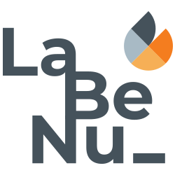

|
Eu sou formada em Engenharia Civil pela Universidade de Federal de Pernanmbuco (UFPE). Conclui a graduação em agosto de 2017, em um cenário de crise econômica no país, então optei por entrar na área acadêmica. Iniciei o Mestrado também na UFPE em 2018 e desde então trabalho com pesquisas acadêmicas na área de engenharia. Foi aí o meu primeiro contato com a programação. |
Após o término do Mestrdo, ingressei no Doutorado, mas já não sentia que queria continuar na área acadêmica, principalmente após de tudo que aconteceu com pandemia. E dentre as áreas de pesquisa, a programação era a parte que mais me impressionava.
Durante esse período na área acadêmica aprendi a programar na linguagem Python e queria cada vez mais me aprofundar na programação e desenvolvimento. Foi então que encontrei a Labenu, uma instutição que tem me levado a conhecer mais esse mundo e me ajudado na transição de carreira.
Hoje tenho conhecimento em HTML, CSS e JavaScript para desenvolvimento de sites.
As instituições de ensino que ajudaram na minha jornada:
| UFPE: onde me formei em engenharia civil e continuei na minha jornada acadêmica pós graduação | |
|  | Labenu: que me tornou uma desenvolvedora web e que está comigo na transição de carreira |
Habilidades técnicas e comportamentais:
| Programadora: | Boa em programação e na resolução de problemas de lógica |
|---|---|
| Rápida aprendizagem: | Me leva a tomadas de decisão mais acertadas diante de problemas imprevisíveis |
| Colaboração: | Trabalho de forma colaborativa com empatia e capacidade de adaptação |


 +55 (81) 98576-1132
+55 (81) 98576-1132
 jacqueline.cmessias@gmail.com
jacqueline.cmessias@gmail.com